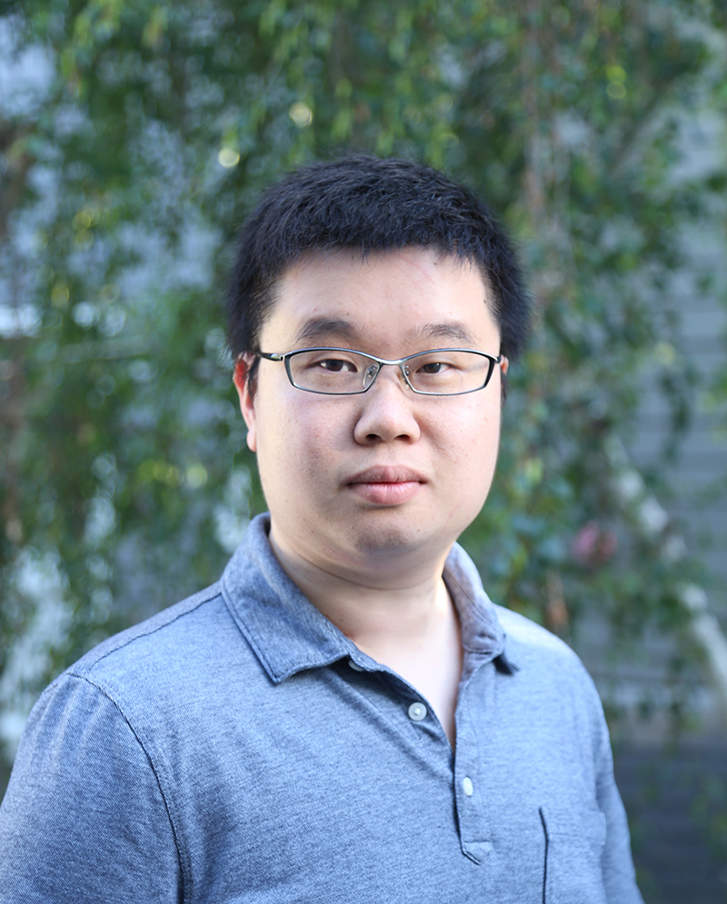

Program
June ???, 2020
Workshop program
Xiaoming Liu
Michigan State University
Dr. Xiaoming Liu earned his Ph.D degree in Electrical and Computer Engineering from Carnegie Mellon University in 2004. He received a B.E. degree from Beijing Information Technology Institute, China and a M.E. degree from Zhejiang University, China in 1997 and 2000 respectively, both in Computer Science. Prior to joining MSU, he was a research scientist at the Computer Vision Laboratory of GE Global Research. His research interests include computer vision, pattern recognition, machine learning, biometrics, human computer interface, etc.
Dengxin Dai
ETH Zurich
Dr. Dengxin Dai is a Lecturer working with the Computer Vision Lab at ETH Zurich. He is leading the research group TRACE-Zurich working on Autonomous Driving within the R&D project "TRACE: Toyota Research on Automated Cars in Europe". In 2016, he obtained his PhD at ETH Zurich under the supervision of Prof. Luc Van Gool and Prof. Gerhard Schmitt. During the PhD study, he was working on the project VarCity for City Modeling based on camera data.
Dr. Dengxin Dai organized the CVPR'19 workshop Vision for All Seasons: Bad Weather and Nighttime, and the ICCV'19 workshop Autonomous Driving. He is a guest editor for the IJCV special issue "Vision for All Seasons" and is an area chair for WACV 2020. He has been a program committee member of several major computer vision conferences and received multiple outstanding reviewer awards. His current research interests include (1) Robust Road Scene Understanding; (2) Learning Driving Models; (3) Human-Vehicle Communication; (4) Sensor Fusion; and (5) Multi-Task Neural Networks.
Vishal M. Patel
Johns Hopkins University

Dr. Vishal M. Patel is an Assistant Professor in the Department of Electrical and Computer Engineering (ECE) at Johns Hopkins University. Prior to joining Hopkins, he was an A. Walter Tyson Assistant Professor in the Department of ECE at Rutgers University and a member of the research faculty at the University of Maryland Institute for Advanced Computer Studies (UMIACS). He completed his Ph.D. in Electrical Engineering from the University of Maryland, College Park, MD, in 2010.
Dr. Vishal M. Patel has received a number of awards including the 2016 ONR Young Investigator Award, the 2016 Jimmy Lin Award for Invention, A. Walter Tyson Assistant Professorship Award, Best Paper Award at IEEE AVSS 2017, Best Paper Award at IEEE BTAS 2015, Honorable Mention Paper Award at IAPR ICB 2018, two Best Student Paper Awards at IAPR ICPR 2018, and Best Poster Awards at BTAS 2015 and 2016. He is an Associate Editor of the IEEE Signal Processing Magazine, IEEE Biometrics Compendium, and serves on the Information Forensics and Security Technical Committee of the IEEE Signal Processing Society. He is a member of Eta Kappa Nu, Pi Mu Epsilon, and Phi Beta Kappa.
Bihan Wen
Nanyang Technological University (NTU), Singapore
Dr. Bihan Wen received the B. Eng. degree in Electrical and Electronic Engineering (EEE) from Nanyang Technological University (NTU), Singapore, in 2012, the MS and PhD degrees in Electrical and Computer Engineering from University of Illinois at Urbana-Champaign (UIUC), USA, in 2015 and 2018, respectively.
Zhiding Yu
NVIDIA
Dr. Zhiding Yu joined NVIDIA Research as a Research Scientist in 2018. Before that, he obtained Ph.D. in ECE from Carnegie Mellon University in 2017, and M.Phil. in ECE from The Hong Kong University of Science and Technology in 2012. His current research interests mainly focus on deep representation learning, weakly/semi-supervised learning, transfer learning and structured prediction, with their applications to semantic/instance segmentation, object detection, boundary detection and domain adaptation/generalization etc.
Dr. Zhiding Yu is a winner of the Domain Adaptation for Semantic Segmentation Challenge in Workshop on Autonomous Driving (WAD) at CVPR18. He is a co-author of the best student paper at ISCSLP14, and winner of the best paper award at WACV15. He was twice awarded the HKTIIT Post-Graduate Excellence Scholarships in 2010 and 2012. His intern work on deep facial expression recognition at Microsoft Research won first runner-up at the EmotiW-SFEW Challenge 2015 and was integrated into the Microsoft Emotion Recognition API under the Microsoft Azure Cognitive Services.
Xi Yin
Microsoft Cloud and AI
Dr. Xi Yin an Applied Scientist in the Computer Vision team at Microsoft Cloud and AI since Sep. 2018. She got her Ph.D. from the Department of Computer Science and Engineering at Michigan State University, where she was a member of the Computer Vision Lab lead by Professor Xiaoming Liu. In 2013, she graduated with a Bachelor’s degree in Electrical Engineering from Wuhan University.
Dr. Xi Yin's research interests lie in computer vision and deep learning. Specifically, Dr. Xi Yin is interested in Large-Scale Object Detection, Weakly-Supervised Learning, Face Recognition, Face Generation, Representation Learning and Transfer Learning.